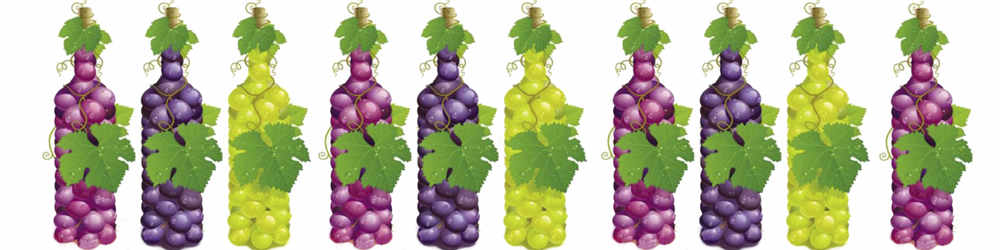

Столові сорти винограду
Столо́ві сорти́ виногра́ду — сорти винограду, що вирощуються для споживання у свіжому вигляді. Столові
сорти мають нещільні грона, ягоди солодкі, соковиті, з тонкою шкірочкою.
Технічні сорти винограду
Технічні сорти винограду призначаються для переробки ягід. Ягоди дуже соковиті і дуже маленькі.
Технічні види винограду мають величезні можливості застосування. Це вино, коньяк, інші безалкогольні
напої. Також можна виготовляти сухофрукти – родзинки. Та й просте вживання у свіжому вигляді.
Універсальні сорти винограду
Універсальні сорти винограду (столово-технічні) йдуть на всі види споживання і переробки. Їх ягоди
вживають в свіжому вигляді, а також застосовують для виготовлення столових вин і соків. Як правило такі
сорти більше схожі на столові, проте відрізняються більш високим відсотком соку в ягоді.
